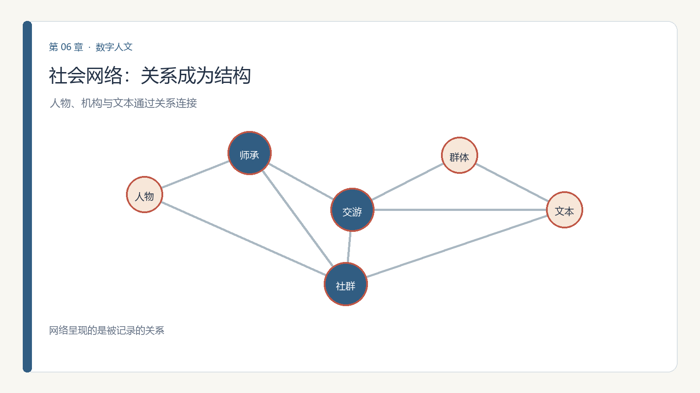
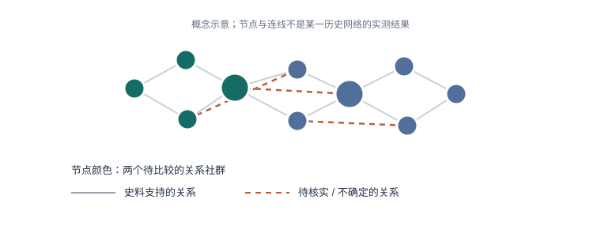

第 6 章 社会网络分析
学习目标：完成本章后，你应能
（1）用节点与边表示一批人物/机构关系；
（2）解释度中心性、介数中心性各自回答什么问题；
（3）用社群发现识别凝聚子群；
（4）指出网络分析自身可能放大的偏见。
6.0 思政导入
思政融入（课程思政）：从师承、交游与民族交往的网络中，常能看到中华民族交往交流交融的历史脉络。用社会网络方法呈现这种“多元一体”的联结，既是对历史的尊重，也有助于今天中华民族共同体意识的培育——方法服务于对团结与统一的深刻理解。
思政案例（课程思政示范案例 / AI 思政课 知识库）：可参照《数据结构与算法》课程思政以“队列”类比抗疫秩序的案例——方法的有序，映射着社会对公平与共同体的追求。

6.1 关系即数据
第 2 章把"关系类"数据单列，因为它回答的是"谁和谁连在一起"——这是单条记录答不了的。家谱、师承、交游、引文、书信往来，本质都是网络。但关系不是从数据表里自然长出来的：研究者必须先规定什么算"交游"（同席、互通信件、互相引用，还是仅在同一文本中出现），再说明每条关系由哪种史料支持。
真实案例：19 世纪波兰科学家在拉丁美洲的跨国网络。 Kaye（2024）从一张 1874 年利马合影出发，结合迁移者的书信、出版物及共同出现的报刊记录，重建波兰科学专业人士在秘鲁及更广地域中的联系。这个案例把照片、文本和人物传记放在同一证据链里；它也提醒我们，照片中的九人并不等于网络中的全部成员。
理论6.2 图的语言：节点、边、度、路径
- 节点（node）：一个人、一本书、一个机构；
- 边（edge）：两者间有定义的关系（师—徒、引—被引、寄—信）。有方向的引用边与无方向的共同署名边不能混为一谈；
- 度（degree）：一个节点连接的边数；加权网络还可计算加权度，但"联系多"不等于"历史影响大"；
- 路径：两节点间依规则连接的路线。最短路径依赖关系是否有向、边权如何解释，以及网络是否缺失。
实际建网时要声明节点唯一标识、边的方向、时间范围、关系类型和证据来源。若"甲给乙写信"与"甲乙同见于一篇记载"都压成同一种边，图就会隐藏证据强弱与含义差异。
理论6.3 中心性：谁是关键节点
- 度中心性：直接邻居数量，可描述直接联系的广度；孤立节点、资料覆盖量和关系定义都会影响排名。
- 介数中心性：节点处在多少对其他节点的最短路径上，可提示结构桥接位置；它不证明此人有意"控制"信息。
- 接近中心性：到其他可达节点的平均最短距离；网络断开时需说明算法如何处理不可达节点，或改用调和中心性。
三种中心性常不一致：一个"朋友多"的人未必是"桥梁"。研究者应先把"关键"翻译成可检验的问题，再选择指标，并与传记、文本记录或人工抽样交叉核对。中心性是特定网络和口径下的结构描述，不是人物价值榜。
理论6.4 社群发现：凝聚子群
社群发现算法尝试把"内部连接相对密、外部连接相对疏"的节点聚成一团。常见方法包括模块度优化和 Leiden/Louvain 等算法，但结果会随边的定义、分辨率参数、随机种子和样本范围改变；输出社群不能自动等同于真实历史派别。
经典参照：Zachary 空手道俱乐部网络。 这份由真实社团互动记录构成的小型网络，常用于说明网络分裂、社群划分与算法比较。它是一个特定社团的经典基准，不应被当作所有社会网络都会清楚分成几团的证明。
近年数字人文研究更强调网络的情境与不确定性：Kaye（2024）讨论如何用社会网络和数字工具从跨国迁移材料拼接历史"大图景"；Conroy 等（2024）则提出在人文网络图中表达关系确定程度的方式。二者共同提醒我们：社群图需要同时展示证据覆盖和不确定性，而不只展示颜色分组。

6.5 文本 × 网络：从共现到引文
网络常由文本而来：同一篇文章共现的词可组成词网；互相引用的文献构成引文网；信件中可确认的寄收关系构成人物网络。第 4 章的命名实体识别可以提供候选人物，但"同一段落出现"只是共现，不等于两人相识或有直接关系。
因此要保留从图到原文的回溯：每条边附上来源、页码/段落、日期、抽取方法及置信度；对自动抽取的关系做人工抽查，并比较不同共现窗口或关系阈值下的网络变化。把文本证据转成关系时，需区分作者原文、编者注和后人研究。
理论6.6 伦理坐标：网络也会偏见（本章核心能力）
- 抽样偏差：被数字化、被研究得多的人物更"中心"，沉默者天然边缘；
- 缺失关系：信件散佚、著者不详，会让真实枢纽"消失"；
- 关系不确定：同名消歧错误、间接转述或资料日期不明，都会把猜测画成确定连线；
- 被代表：用"中心性高"暗示"更重要"，是把结构当价值；网络边界也可能排除不符合既定定义的人和群体。
近三年研究证据：Conroy 等在 Frontiers in Communication（2024）讨论如何将模糊、概率性的人文资料呈现在网络可视化中，提出把不确定性编码进连线或节点标记。Kaye 在 BJHS Themes（2024）以波兰科学专业人士的迁移网络为例，展示如何综合照片、书信与出版物，同时处理局部史料与跨国"大图景"之间的尺度问题：Kaye, 2024；Conroy et al., 2024。
一条红线：不把"网络中心"直接等同于"历史重要"；呈现中心性时同步说明数据覆盖的局限。
6.7 综合实践：构建关系网络并分析关键节点
任务一：从材料建立人物关系网
小练习 6.1（网络分析）：取第4章 NER 抽出的人物—地点 / 人物—人物关系，回到原文核实后，用 networkx 建一张小网。本章 V2.2 的《基于用户关系管理的高校图书馆数字学术服务重塑》《基于开源情报的军事知识图谱问答智能服务研究》展示了"关系数据→服务 / 问答"的落地，可对照思考你所建网络的用途。
任务二：比较中心性并解释“关键人物”
- 目标：在任务一建好的人物关系网上，量化谁最核心。
- 步骤：
- 用 networkx 计算 degree / betweenness / closeness；
- 排序取 Top 5；
- 检查“度数最高”是否等于“最关键”，举一个反例；
- 做社群发现（community detection）；
- 写 150 字结论。
- 工具：networkx。
- 产出：中心性排序表 + 社群划分 + 结论。
- 评价量规：三种中心性正确（40%）、反例有见地（30%）、结论清晰（30%）。
6.8 本章小结与思考
带走三件事：图的语言（节点/边/度/路径）、三种中心性（度/介数/接近，答不同问题）、社群发现 + 偏见自觉。网络让你看见"结构"，但结构不等于价值。
思考题
- 用你专业的某组关系（师承/合作/引用）画成网络，谁的中心性最高？这和你既有认知一致吗？
- "被数字化得多"的人更中心——这会怎样扭曲我们对历史圈子的理解？
- 如果一封关键信件散佚，网络分析的结论会怎样改变？这提醒我们什么？
6.9 学术前沿与延伸阅读
下表为通过 OpenAlex（开放学术图谱，聚合期刊/会议/预印本）、DBLP（CS 会议期刊，含 SIGIR/UIST/DH/IJDAR/EPIA）、arXiv（预印本）、CrossRef（期刊 DOI 元数据）、CORE（开放获取库）检索到的真实文献，按来源/被引排序，供延伸阅读与实验报告引用。
| 来源 | 年份 | 标题（链接） | 作者 / 场所 |
|---|---|---|---|
| CrossRef | 2018 | Social Network Analysis | Advances in Business Information Systems and Analytics（被引 10） |
| CrossRef | 2024 | Poet-Composer Collaborations in Modern Egyptian Song: A Social Network Analysis Approach to Music History | Journal of Cultural Analytics（被引 1） |
| CrossRef | 2018 | Visual Social Network Analysis, Visual Analytics | Encyclopedia of Social Network Analysis and Mining |
| CrossRef | 2025 | Relational Analytics and Social Network Analysis | AI, Analytics and Strategic Decision Making |
| CrossRef | 2025 | Strengthening Educational Research Curriculum through Network Curriculum Analytics & Social Network Analysis | AERA 2025 |
| CrossRef | 2013 | Network Theory/Social Network Analysis | Theory in Social and Cultural Anthropology: An Encyclopedia |
| CrossRef | Text Mining and Social Network Analysis | Predictive Analytics, Data Mining and Big Data | |
| CrossRef | 2017 | Network Analysis and Social Network Mapping | Digital Analytics for Marketing |
课堂复现（检索即方法）：下列代码直接调用 OpenAlex 免费 API 复现本章文献检索（无需密钥）。
import urllib.request, urllib.parse, json
q = 'data science digital humanities'
url = 'https://api.openalex.org/works?search=' + urllib.parse.quote(q) + '&per_page=10&sort=cited_by_count:desc'
oa = json.loads(urllib.request.urlopen(url, timeout=30).read())
for w in oa['results']:
print(w['publication_year'], w['title'], '->', (w.get('primary_location') or {}).get('source', {}).get('display_name'))误用警示：① arXiv 预印本未经同行评审，引用须标 preprint 并追正式版；② 被引数代表影响力非结论正确；③ 商业库（WoS/Scopus/Elsevier/JSTOR/CNKI）本环境无订阅，需机构账号获取后再并入。
与实验衔接：将任一方法对照本章实验改写数据集或提示词，即可形成有学术依据的结题报告。
第6章·中文核心期刊文献实证（V2.2·19 种图情档核心期刊）
下表论文来自 19 种中文图情档核心期刊（中国图书馆学报、情报学报、情报资料工作、档案学通讯、大学图书馆学报、图书情报工作、数据分析与知识发现、情报杂志、情报理论与实践、图书与情报、档案学研究、图书馆杂志、图书情报知识、图书馆论坛、图书馆学研究、图书馆建设、情报科学、现代情报、信息资源管理学报），经 Web 检索（期刊官网 / CNKI 索引 / DOI 溯源）按主题核实得到真实文献（含 DOI/链接）。
| 来源期刊 | 年份 | 标题（链接） | 作者 |
|---|---|---|---|
| 图书情报工作 | 2023 | 智慧图书馆的全数据体系研究 | 杨新涯, 文佩丹, 卓应忠 |
| 图书情报工作 | 2024 | 面向生成式人工智能(AIGC)的图书馆信息资源建设优化策略研究 | 丁遒劲, 苏静 |
| 图书情报工作 | 2024 | 智慧图书馆用户数据合规治理机制研究 | 张春春, 孙瑞英 |
| 数据分析与知识发现 | 2024 | 基于开源情报的军事知识图谱问答智能服务研究 | 范俊杰, 马海群, 刘兴丽 |
| 情报理论与实践 | 2023 | AIGC驱动的智慧图书馆转型:框架、路径与挑战 | 赵杨, 张雪, 范圣悦 |
| 图书与情报 | 2023 | 数智驱动下智慧图书馆的场景应用与模型体系建构 | 于兴尚, 刘月, 谭洪, 徐中阳 |
| 大学图书馆学报 | 2024 | 基于用户关系管理的高校图书馆数字学术服务重塑 | 张更平, 陈红艺, 宁子晨, 慎金花 |
| 大学图书馆学报 | 2024 | 发挥学术资源优势,利用人工智能技术提升大学图书馆支撑个性化学习的能力 | 刘宏伟, 季莹, 高雨, 王晓丹 |
课堂复现（中文文献检索）：这些期刊正式全文多见于 CNKI/万方/维普（本环境无订阅）。可在机构网络以「期刊名 + 主题词」检索，导出 BibTeX/RIS 后交我并入；DOI 可在 https://doi.org/<DOI> 溯源摘要。
误用警示：① 引用以期刊正式版本为准（年/卷/期/页）；② 回到原文核对方法与数据；③ 与本节实验的映射是"启发"而非"背书"。
与实验衔接：将上表任一中文方法（如中文知识图谱、机器学习人文应用）对照本章实验改写，即可形成有本土学术依据的结题报告。
本章配套游戏：关系织网